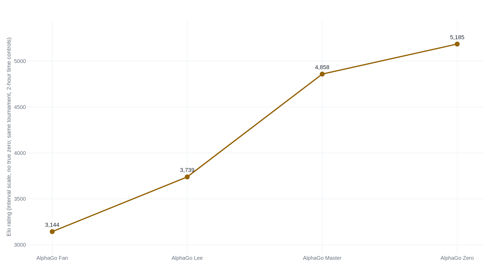

AlphaGo's Nature paper never mentions Lee Sedol
Its one human match is a 5-0 win over Fan Hui, Europe's champion and a professional 2 dan, from a network trained first on 30 million human Go positions.
Why this matters
AlphaGo is one of the two or three facts about AI that everyone already carries around: a computer beat a human champion at the hardest board game there is. That much is true. It names the wrong match, though, and skips how the system that made the news actually learned to play. This lesson works through what the paper people actually cite built: two neural networks and a search, trained first on human moves, then sharpened against itself, then measured against a European champion. It also works through what came two years later. A version of the same idea threw the human moves away and still got further. And it works through where that recipe, search plus self-play, does and does not carry over today. By the end you can say which document backs which claim about AlphaGo, and which claim is bigger than any document actually supports.
- 01
- Rich Sutton's essay has four examples and zero citations: Sutton names AlphaGo as his central proof that search and self-play beat hand-built knowledge. This lesson gives the numbers behind that one example.
- 02
- Andrej Karpathy, "AlphaGo, in context": a plain-language read on what AlphaGo's architecture did and did not represent, written the week of the Lee Sedol match.
AlphaGo's actual opponent was a European champion
"Mastering the Game of Go with Deep Neural Networks and Tree Search" was published in Nature on 28 January 2016. It reports one formal head-to-head match: AlphaGo against Fan Hui, a professional 2 dan and the winner of the 2013, 2014, and 2015 European Go championships. AlphaGo won five games to none, played over 5-9 October 2015, in what the paper calls the first time a computer Go program had defeated a human professional player without a handicap.1 Say "AlphaGo" to almost anyone today, though, and a different match comes to mind: a computer beating the best Go player alive, on camera, in Seoul. In March 2016, a later DeepMind system beat the professional 9 dan Lee Sedol four games to one. Lee Sedol's only win came in game four, by resignation.23 Google's own announcement, before the match, called him "the top Go player of the past decade."4 Go crowns no single world champion. None of this is in the Nature paper. Read it start to finish and Lee Sedol's name never appears in it.
DeepMind's own follow-up paper, published in 2017, gives the two systems different names, because they are different systems. The one that beat Fan Hui is "AlphaGo Fan." The one that beat Lee Sedol, "the winner of 18 international titles," a separate system trained over several months, is "AlphaGo Lee."5 One Nature paper, two matches. The paper covers only the earlier, smaller win.
A policy network and a value network share the search
Picture one move, partway through a game, with several plausible replies on the board. AlphaGo's search tracks three numbers for each candidate reply. One is how many times it has already been tried. One is a running average of how well it did when tried, its action value. One is how likely a strong human would play it there before any searching happens at all, its prior probability.1 The search keeps returning to whichever candidate scores best on action value plus a bonus tied to that prior. The bonus shrinks the more times the candidate has already been tried. Try a candidate, update its value, let the prior steer what to try next, and repeat. That cycle is Monte Carlo tree search: a way of reading a small, promising slice of a game tree instead of every branch to the end.1
The prior probability comes from the first of AlphaGo's two networks, the policy network. It is trained to guess a human's actual next move. Tested on professional games it had never trained on, its top guess matched the real move 57.0 percent of the time, 13 points ahead of the best previous Go program's 44.4 percent.1 The action value draws on the second network, the value network. It does a different job. Instead of proposing a move, it looks at an entire board and returns one number: an estimate of who is winning from that position.1 AlphaGo's search runs both at once, sampling candidate moves with the policy network and scoring the positions they lead to with the value network.
Neither network plays Go by itself. The single-machine version of AlphaGo ran 40 of these search threads at once, each following its own path through the tree, all steered by the same two networks.1 The advance was running the two networks and the search together, each one leaning on the other two.
Thirty million human positions came before any self-play
The policy network's first teacher was 29.4 million board positions, taken from 160,000 games played by humans ranked 6 to 9 dan on the KGS Go server.1 The paper's main text rounds this to 30 million positions from the KGS Go Server. A person working through 160,000 games at one a day would need about 440 years to play them all firsthand. AlphaGo studied them as still positions to imitate, before it ever chose a move of its own.
Only after that came reinforcement learning. A copy of the trained policy network played games against randomly selected earlier versions of itself, and the winner's moves reinforced its weights. Head to head, this self-play network beat the network that had only imitated humans more than 80 percent of the time.1 Using no search at all, it beat Pachi, an open-source program that runs 100,000 simulations per move, 85 percent of the time. The value network came last, trained on a fresh set of 30 million self-play positions, one per game.1 Its error rate on both sets was low enough that the paper reports minimal overfitting.
AlphaGo ran in two configurations. The single-machine version, 40 search threads, 48 CPUs, 8 GPUs, won 494 of 495 games against other Go programs, a 99.8 percent win rate.1 The stronger, distributed version is the one that played Fan Hui. It won five games to none.1 The paper anchors its whole rating scale to Fan Hui's own score, 2,908. The distributed version rated 3,140 on that same scale.1 A gap that size, about 230 points, works out by the paper's own conversion to roughly one amateur dan rank. That is about a 79 percent chance of winning any single game.1 Fan Hui's own rank, professional 2 dan, sits second-lowest of nine professional ranks.1 The paper's own claim is narrower than the one people repeat. Its own words are that AlphaGo "plays at the level of the strongest human players."1
AlphaGo Zero beat the system that beat Lee Sedol
The 2017 follow-up, "Mastering the Game of Go without Human Knowledge," removed the human data entirely. AlphaGo Zero trained, in the paper's own word, tabula rasa: no human games, no supervised pretraining, nothing beyond the rules of Go.5 Its search worked a little differently too: one neural network instead of two, and no separate rollouts inside the tree.5 Its first training run generated 4.9 million self-play games over about three days. Each move ran 1,600 simulations of that same tree search, about 0.4 seconds of thinking time.5 Run the arithmetic on that game count: 4.9 million games across three days averages to roughly 19 games a second, continuously, for 72 hours straight.
After those 72 hours, DeepMind evaluated Zero against the exact version of AlphaGo Lee that had defeated Lee Sedol, under the same time controls used in Seoul. Zero ran on one machine with 4 TPUs, chips built for this kind of computation. AlphaGo Lee ran distributed across 48 of them. Zero won 100 games to 0.5 That 100-0 score is AlphaGo Lee's alone. AlphaGo Fan, the system the Nature paper actually measured against Fan Hui, never played that match.
A second, larger training run went on for about 40 days and generated 29 million self-play games, using a bigger network.5 A final tournament compared every version at the same time control, 5 seconds a move. The raw network alone, with no search at all, rated 3,055. AlphaGo Zero rated 5,185, AlphaGo Master 4,858, AlphaGo Lee 3,739, and AlphaGo Fan 3,144.5 In a separate, direct match, Zero beat Master 89 games to 11.

The 2017 paper states plainly what this revises. A pure reinforcement learning approach needs only a few more hours to train. It reaches much better performance in the end than training on human expert data first does.5 The human games behind AlphaGo Fan and AlphaGo Lee turned out to be optional. Zero got further without them, in less training time.
Go has a rule book and a clear winner. That property, and what happens without it, is exactly the line a 2025 reasoning-model paper ran into. DeepSeek's technical report on its R1 model describes trying to import AlphaGo and AlphaZero's approach: a search guided by a trained value model, improved through self-play.6 It did not transfer cleanly. Token generation "presents an exponentially larger search space" than a board game does.6 Training a fine-grained value model for it "is inherently difficult," the paper reports. It concludes that "iteratively boosting model performance through self-search remains a significant challenge."6 The lab that cites AlphaGo in 2025 used it to mark exactly where its own recipe stopped working.
What each document actually proved
Three separate records collapse into one AlphaGo story in casual memory. Each established something narrower.
| Document | What it actually establishes | The claim it gets cited for |
|---|---|---|
| 2016 paper | AlphaGo Fan beat Fan Hui, Europe's champion and a professional 2 dan, five games to none, after training on 29.4 million human positions. | "AlphaGo beat the world's best." The paper's own words are that AlphaGo plays at the level of the strongest human players. |
| Lee Sedol match | AlphaGo Lee, a separate system trained over several months, beat Lee Sedol four games to one in March 2016. | Folded into "the AlphaGo paper." That paper was published two months earlier and never mentions Lee Sedol at all. |
| 2017 Zero paper | AlphaGo Zero, trained with no human game data, beat AlphaGo Lee 100 games to 0. | "AlphaGo learned Go from nothing." True of Zero. False of the systems that beat Fan Hui and Lee Sedol, both trained first on human games. |
The takeaway
AlphaGo, as most people remember it, is not one fact. It is three. A paper beat a European champion with a system trained on tens of millions of human moves. A separate match, two months later, beat the player everyone actually remembers. A third system, two years on, reached higher ratings than either one without any human moves at all. Only that third system, AlphaGo Zero, earns the claim that a program can learn Go from nothing. The first one earns a narrower, still real claim: two trained networks and a search, pointed at a game with a rule book and a knowable winner, beat a strong professional. What made that result citable was never one clever idea. It was 29.4 million imitated positions, a search that tried and re-tried its own guesses, and a value estimate that got sharper the more of it ran. Reach for AlphaGo to argue that a system can bootstrap ability from nothing, and check first which of the three you actually mean.
- 01
- Silver et al., "Mastering the Game of Go without Human Knowledge," in full: how a system trained without any human games reached a higher rating than every version that used them.
- 02
- DeepSeek-AI, "DeepSeek-R1," in full: a 2025 lab's own account of trying, and failing, to carry AlphaGo's search-plus-self-play recipe into language generation.
Sources
- Silver et al., "Mastering the Game of Go with Deep Neural Networks and Tree Search" (Nature, 2016)
- Wikipedia · "AlphaGo versus Lee Sedol"
- People's Daily Online · "AlphaGo defeats Lee Sedol 4-1 in historic Go match" (15 March 2016)
- Google · "AlphaGo's ultimate challenge: a five-game match against the legendary Lee Sedol"
- Silver et al., "Mastering the Game of Go without Human Knowledge" (Nature, 2017)
- arXiv · DeepSeek-AI, "DeepSeek-R1: Incentivizing Reasoning Capability in LLMs via Reinforcement Learning" (2501.12948)